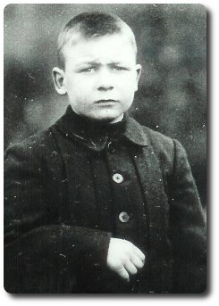

-->> in 1913, 8 years old
-->> in 1913, 8 years old 

{kind=link}
Son of Alice Elizabeth Latham (who was born around 1880 in England)
1904.12.09 : Edward was born in Epsom, Surrey, England ( Dec 1904, Epsom, v.2a, pg.32 )
| REGISTRATION DISTRICT Epsom | |||||||
| 1904 BIRTH in the Sub-district of Epsom in the County of Surrey | |||||||
| When and Where Born | Name if any | Sex | Father | Mother | Occupation of Father | Informant | When registered |
| Ninth December 1904, Union Infirmary, Epsom, UD | Edward | Boy | --- | Alice Elizabeth Latham a Laundress of Epsom | --- | J. T. White Master Union Infirmary Epsom | Thirty First December 1904 |
1909.09.13 : When Edward was 4 his mother died in the Union Infirmary, St. Johns Hill, London, England
1909.10.29 : When Edward was 4 he was admitted to Dr. Barnardo's, Sheppard House (182 Grove Road, East London, for boys ages 6-11). He was boarded out at Isleham, then he returned to Leopold House (199 Burdett Road, East London, for boys 10-13).
1911.04.02 : census, Victoria Cottage, Beck Road, Isleham, Cambridgeshire, England
| 1911 England Census : Victoria Cottage, Beck Road, Isleham, Cambridgeshire, England (five rooms) | |||||||||
| Name | Relation | Age Last Birthday |
Condition |
Years | Children born alive | Children still living | Children who have died | Occupation | Where Born |
| Silas King | Head | 49 | Married | - | - | - | - | Agricultural Labourer | Isleham Cambs |
| Susannah King | Wife | 48 | Married | 26 | 2 | 2 | nil | - | ?? Suffolk |
| James King | Son | 23 | Single | - | - | - | - | Clerk, Railway | Isleham Cambs |
| Ivy King | Grandaughter | 4 | - | - | - | - | - | - | ?? End Middlesex |
| Harold Walker | Border | 9 | - | - | - | - | - | School | Hackney London |
| Edward Latham | Border | 6 | - | - | - | - | - | School | Epsom Surrey |
1913.03.13 : When Edward was 8 he emigrated to Canada. He sailed from Liverpool, England on the Allen Line Steamship Co.'s Royal Mail Steamer "Corinthian" from London with Dr. Barnardo's group (111 girls, 142 boys) bound for Saint John, N.B., arriving 1913-03-30 at 9:00. There was a stop on 1913.03.15 at Havre, France. Their final destination was Toronto, Ontario for the boys, Peterborough, Ont for the girls. From Library and Archives Canada, Reference: RG 76, Microfilm: T-4828: ship's passenger list- he is on page 30. Number of Souls: Adults: 747, Children: 210. Passengers: Saloon: 0, 2nd Cabin: 190, Steerage: 797. (In the Fall of 1914 this ship was part of the 1st Canadian Troop Convoy)
1913.03.30 : Edward arrived in Saint John, New Brunswick, Canada, destination Toronto, Ontario, Canada. "When Edward arrived in Canada he was boarded out with Mr. Love of Hiawatha, Ontario and said to be doing well. He moved to the employ of Mr. Fox where he made a splendid impression. In 1927 we learned that he was in the US Marines and in 1930 we learned he had located his sister in Toronto. The last recorded information is in 1943 when we learned he was married and had three children." -- letter from Barnardo's dated 6 September 85
1913.09.25 : Edward's sister Alice Latham (13) emigrated to Peterborough, Ontario, Canada.
From this point on Edward becomes Albert. I have this Christmas card signed Edward Albert Latham [card]
![[card]](images/latham-edward-albert-card.jpg){kind=link}
19?? : He married Ethel Nelson
{kind=link}
Found Ethel's name here : Family Tree of Edward Saunders and Hannah Norton
![[card, pg.1]](images/latham-june-christmas-card-pg01.jpg){kind=link}
![[card, pg.2]](images/latham-june-christmas-card-pg02.jpg){kind=link}